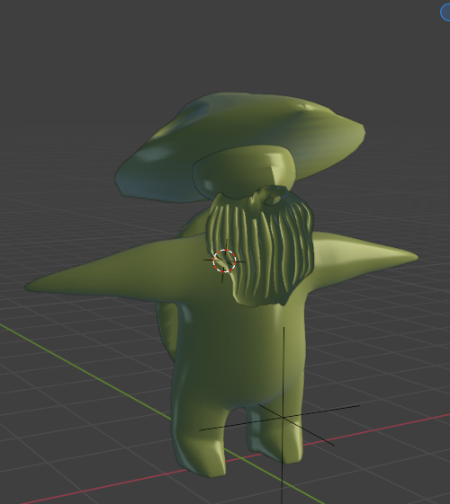
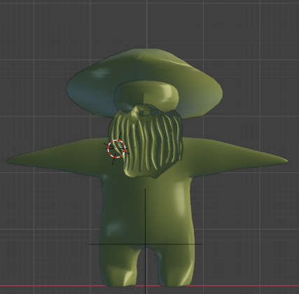
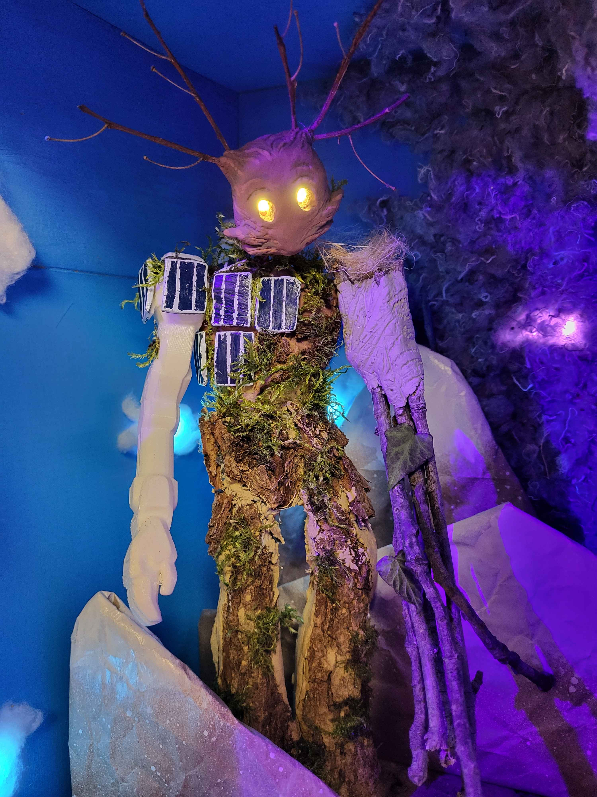
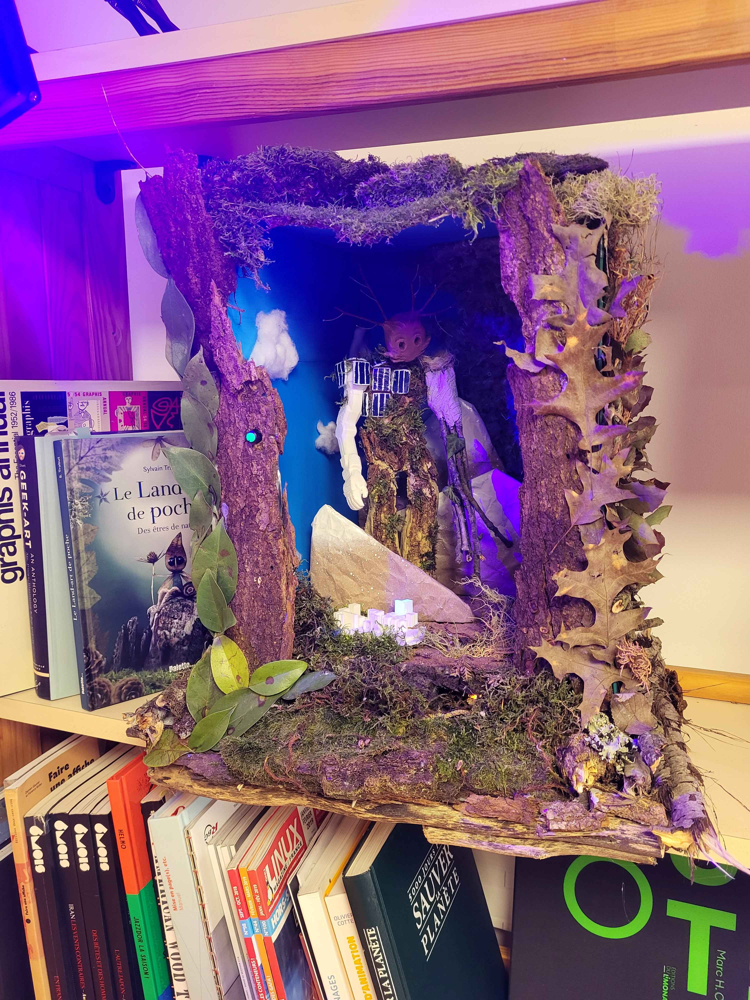

Accueil
Projets
Compétences & Expériences
Contact
EN
Télécharger CV
← Retour aux projets
Solaryth : Kanoko
À propos du projet
Modélisation 3D
IoT
Unity
Blender
Solaryth sur Itch.io
Kanoko sur Itch.io
Kanoko sur Sketchfab




×